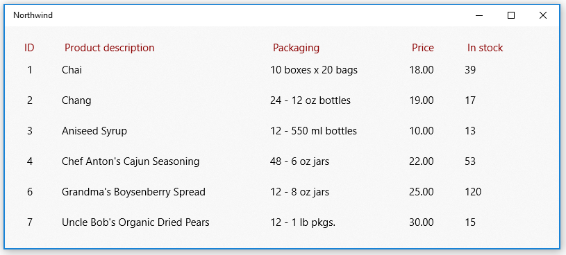
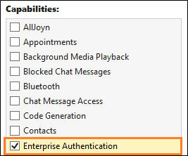
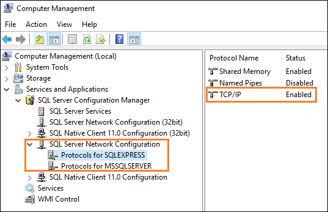
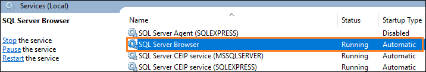

Use a SQL Server database in a Windows app
Your app can connect directly to a SQL Server database and then store and retrieve data by using classes in the System.Data.SqlClient namespace.
Getting started
In this guide, we'll show you one way to do that in your Windows App SDK apps. If you install the Northwind sample database onto your SQL Server instance, and then use these snippets, you'll end up with a basic UI that shows products from the Northwind sample database.

Tip
You can also get scripts to create the Northwind and pubs sample databases from the SQL Server Samples GitHub repository.
The snippets that appear in this guide are based on this UWP sample app.
First, set up your solution
To connect your app directly to a SQL Server database, your app can target any minimum version of Windows supported by Windows App SDK. You can find that information in the properties page of your project.
- Open the Package.appxmanifest file of your Windows App SDK project in the manifest designer.
- In the Capabilities tab, select the Enterprise Authentication checkbox if you are using Windows Authentication for authenticating your SQL Server.

Important
You will also need to select Internet (Client & Server), Internet (Client), and Private Networks (Client & Server), regardless of whether or not you're using Windows Authentication.
Add and retrieve data in a SQL Server database
In this section, we'll do these things:
1️⃣ Add a connection string.
2️⃣ Create a class to hold product data.
3️⃣ Retrieve products from the SQL Server database.
4️⃣ Add a basic user interface.
5️⃣ Populate the UI with Products.
Note
This section illustrates one way to organize your data access code. It's meant only to provide an example of how you can use System.Data.SqlClient to store and retrieve data from a SQL Server database. You can organize your code in any way that makes the most sense to your application's design.
Add a connection string
In the App.xaml.cs file, add a property to the App class, that gives other classes in your solution access to the connection string.
Our connection string points to the Northwind database in a SQL Server Express instance. The connection string in this snippet assumes you kept the default instance name SQLEXPRESS when installing SQL Server Express. You can make changes to the connection string to match your SQL Server instance, database, and authentication method.
sealed partial class App : Application
{
// Connection string for using Windows Authentication.
private string connectionString =
@"Data Source=.\SQLEXPRESS;Initial Catalog=NORTHWIND;Integrated Security=SSPI";
public string ConnectionString { get => connectionString; set => connectionString = value; }
...
}
Important
In production applications, connection information should be stored securely in app configuration (see Adding Azure App Configuration by using Visual Studio Connected Services). Connection strings and other secrets should never be hard-coded.
Create a class to hold product data
We'll create a class that implements the INotifyPropertyChanged event so that we can bind attributes in our XAML UI to the properties in this class.
public class Product : INotifyPropertyChanged
{
public int ProductID { get; set; }
public string ProductCode { get { return ProductID.ToString(); } }
public string ProductName { get; set; }
public string QuantityPerUnit { get; set; }
public decimal UnitPrice { get; set; }
public string UnitPriceString { get { return UnitPrice.ToString("######.00"); } }
public int UnitsInStock { get; set; }
public string UnitsInStockString { get { return UnitsInStock.ToString("#####0"); } }
public int CategoryId { get; set; }
public event PropertyChangedEventHandler PropertyChanged;
private void NotifyPropertyChanged(string propertyName)
{
PropertyChanged?.Invoke(this, new PropertyChangedEventArgs(propertyName));
}
}
Retrieve products from the SQL Server database
In the MainWindow.xaml.cs file of the Windows App SDK project, create a method that gets products from the Northwind sample database, and then returns them as an ObservableCollection collection of Product instances.
public ObservableCollection<Product> GetProducts(string connectionString)
{
const string GetProductsQuery = "select ProductID, ProductName, QuantityPerUnit," +
" UnitPrice, UnitsInStock, Products.CategoryID " +
" from Products inner join Categories on Products.CategoryID = Categories.CategoryID " +
" where Discontinued = 0";
var products = new ObservableCollection<Product>();
try
{
using (var conn = new SqlConnection(connectionString))
{
conn.Open();
if (conn.State == System.Data.ConnectionState.Open)
{
using (SqlCommand cmd = conn.CreateCommand())
{
cmd.CommandText = GetProductsQuery;
using (SqlDataReader reader = cmd.ExecuteReader())
{
while (reader.Read())
{
var product = new Product();
product.ProductID = reader.GetInt32(0);
product.ProductName = reader.GetString(1);
product.QuantityPerUnit = reader.GetString(2);
product.UnitPrice = reader.GetDecimal(3);
product.UnitsInStock = reader.GetInt16(4);
product.CategoryId = reader.GetInt32(5);
products.Add(product);
}
}
}
}
}
return products;
}
catch (Exception eSql)
{
Debug.WriteLine($"Exception: {eSql.Message}");
}
return null;
}
Add a basic user interface
Add the following XAML to the MainWindow.xaml file of the Windows App SDK project.
This XAML creates a ListView to show each product that you returned in the previous snippet, and binds the attributes of each row in the ListView to the properties that we defined in the Product class.
<Grid Background="{ThemeResource SystemControlAcrylicWindowBrush}">
<RelativePanel>
<ListView Name="InventoryList"
SelectionMode="Single"
ScrollViewer.VerticalScrollBarVisibility="Auto"
ScrollViewer.IsVerticalRailEnabled="True"
ScrollViewer.VerticalScrollMode="Enabled"
ScrollViewer.HorizontalScrollMode="Enabled"
ScrollViewer.HorizontalScrollBarVisibility="Auto"
ScrollViewer.IsHorizontalRailEnabled="True"
Margin="20">
<ListView.HeaderTemplate>
<DataTemplate>
<StackPanel Orientation="Horizontal" >
<TextBlock Text="ID" Margin="8,0" Width="50" Foreground="DarkRed" />
<TextBlock Text="Product description" Width="300" Foreground="DarkRed" />
<TextBlock Text="Packaging" Width="200" Foreground="DarkRed" />
<TextBlock Text="Price" Width="80" Foreground="DarkRed" />
<TextBlock Text="In stock" Width="80" Foreground="DarkRed" />
</StackPanel>
</DataTemplate>
</ListView.HeaderTemplate>
<ListView.ItemTemplate>
<DataTemplate x:DataType="local:Product">
<StackPanel Orientation="Horizontal" >
<TextBlock Name="ItemId"
Text="{x:Bind ProductCode}"
Width="50" />
<TextBlock Name="ItemName"
Text="{x:Bind ProductName}"
Width="300" />
<TextBlock Text="{x:Bind QuantityPerUnit}"
Width="200" />
<TextBlock Text="{x:Bind UnitPriceString}"
Width="80" />
<TextBlock Text="{x:Bind UnitsInStockString}"
Width="80" />
</StackPanel>
</DataTemplate>
</ListView.ItemTemplate>
</ListView>
</RelativePanel>
</Grid>
Show products in the ListView
Open the MainWindow.xaml.cs file, and add code to the constructor of the MainWindow class that sets the ItemSource property of the ListView to the ObservableCollection of Product instances.
public MainWindow()
{
this.InitializeComponent();
InventoryList.ItemsSource = GetProducts((App.Current as App).ConnectionString);
}
Start the project and see products from the Northwind sample database appear in the UI.
Explore the System.Data.SqlClient namespace to see what other things you can do with data in your SQL Server database.
Tip
Try asking Microsoft Copilot for help with your SQL queries. Copilot can help you write SQL queries, and suggest ways to improve your code.
Trouble connecting to your database?
In most cases, some aspect of the SQL Server configuration needs to be changed. If you're able to connect to your database from another type of desktop application such as a Windows Forms or WPF application, ensure that you've enabled TCP/IP for SQL Server. You can do that in the Computer Management console. (See Windows Tools/Administrative Tools for more information.)

Then, make sure that your SQL Server Browser service is running.
